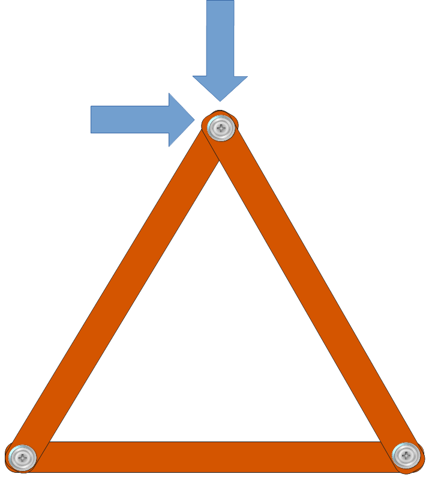

7. ELEMENTOS DE UNA ESTRUCTURA
Para que una estructura funcione correctamente, es decir, sea resistente, rígida y estable, necesita estar formada por una serie de elementos estructurales bien diseñados y distribuidos. Estos elementos no están colocados al azar: cada uno cumple una función muy concreta y resiste determinados tipos de esfuerzos cuando sobre la estructura actúan distintas fuerzas o cargas.
Vigas: repartiendo las cargas
Las vigas son los elementos horizontales que conectan los pilares entre sí o con otros muros de carga.
Su papel es muy importante porque ayudan a repartir los pesos hacia los pilares o apoyos y evitan que sufra solo una parte de la estructura.
A menudo, las vigas están hechas de hormigón armado o acero, y se colocan justo bajo los suelos, los techos o sobre los marcos de las puertas y ventanas.
Al ejercer su función, las vigas sufren sobre todo flexión, es decir, tienden a curvarse bajo el peso de la carga.

Pilares o columnas: los "ascensores" de las cargas
La vigas descansan sobre las columnas o pilares, que se colocan de forma vertical.
Su trabajo principal es recibir las cargas (suelos, techos, tejados, otra plantas…) de las vigas y transferir esa carga hasta los cimientos.
Si observas cualquier edificio, verás columnas de hormigón, acero o madera; incluso las patas de una mesa cumplen esta función en miniatura.
Las columnas trabajan principalmente a compresión, aguantando grandes pesos sin deformarse.

Cimientos: la base de todo
En cualquier edificio, puente o torre, el elemento fundamental es el cimiento.
Los cimientos se sitúan bajo tierra y tienen la misión de transmitir y repartir todo el peso de la construcción al terreno, evitando que la estructura se hunda o se incline.
Imagina unos zapatos muy anchos repartiendo tu peso sobre el barro: cuanta más superficie, menos te hundes.
Así funcionan los cimientos, que suelen estar hechos de hormigón armado, un material especialmente resistente.

Arcos: curvar para resistir

En muchas construcciones antiguas y modernas encuentras arcos, que son elementos curvos capaces de soportar grandes pesos desviando la fuerza hacia sus apoyos laterales.
Los arcos fueron una de las grandes aportaciones de la arquitectura romana, y todavía hoy se usan en puentes, entradas monumentales y bóvedas.
Trabajan, principalmente, a compresión, ya que cada pieza (dovela) del arco “empuja” contra la siguiente, manteniendo el conjunto estable sin necesidad de pegamento.

Tirantes: aguantando la estructura

A veces la resistencia y la estabilidad se consiguen con elementos que “tiran”, en vez de empujar: son los tirantes o tensores. Se ven muy bien en puentes colgantes, cubiertas de estadios modernos o grandes torres eléctricas.
Suele tratarse de cables de acero o barras metálicas. Los tensores están diseñados para soportar esfuerzos de tracción, es decir, para resistir ser estirados sin romperse. Actúan manteniendo tensa una parte de la estructura o evitando movimientos indeseados.
Barras formando triángulos: dando rigidez a la estructura
La triangulación es una técnica de construcción muy importante que se usa para hacer estructuras más fuertes, seguras y, sobre todo, rígidas (poca deformación). Se basa en crear triángulos usando barras, llamadas perfiles..
Dependiendo dela colocación de los perfiles y las cargas soportadas, cada uno de las barras pueden estar sometidas a tracción o a compresión1.
(Recuerda cómo lo demostró el profesor en clase)
Importante

El triángulo es el único polígono que no cambia de forma, aunque le empujemos o estiremos los lados.
Si sometemos a un cuadrado a una fuerza, se deforma y se vuelve un rombo.
Por eso, muchas estructuras (puentes, torres, andamios…) tienen partes en forma de triángulo.

¿Qué ventajas tiene usar triángulos?
- Más resistencia y estabilidad: Las estructuras con triángulos no se doblan ni se caen fácilmente.
-
Mejor reparto del peso: Los triángulos ayudan a que el peso se reparta bien, y las piezas no se rompan.
-
Menos material: Se puede usar menos material y la estructura sigue siendo fuerte.
Ejemplos de triangulación en la vida real

-
Los puentes suelen tener barras formando triángulos.
-
Las torres metálicas (como la Torre Eiffel) están hechas con muchos triángulos pequeños.
-
Los marcos de bicicletas, andamios y hasta las estanterías fuertes usan triángulos.
Otros elementos importantes
- Riostras: Son barras que se colocan en diagonal, sobre todo en estructuras entramadas o trianguladas, para aumentar la rigidez y evitar que la estructura se deforme.
- Muros de carga: Grandes paredes que, además de separar espacios, ayudan a soportar el peso de techos y plantas superiores, muy típicos en casas antiguas.
- Perfiles: Son barras metálicas de diferentes formas (en L, U, H, etc.) que refuerzan columnas y vigas para hacerlas más resistentes sin aumentar demasiado el peso.
¿Cómo trabajan juntos estos elementos?
En toda estructura resistente, todos estos elementos colaboran:
- Los cimientos transmiten el peso al suelo.
- Las columnas y pilares llevan el peso de arriba hasta la base.
- Las vigas reparten los esfuerzos y conectan los apoyos.
- Los arcos salvan los huecos grandes usando la compresión.
- Los tirantes y riostras dan estabilidad frente a vientos, movimientos o vibraciones.
Juntos, hacen posible que la estructura resista fuerzas muy intensas sin romperse ni deformarse.
Actividad de observación
Mira a tu alrededor, en casa o en tu centro:
- ¿Dónde ves columnas? ¿Para qué sirven allí?
- ¿Puedes distinguir alguna viga? ¿Cómo está colocada?
- ¿Has notado algún arco en puertas, ventanas o entradas?
- ¿Ves cables o tirantes en algún puente o cubierta?
Detectar estos elementos en el entorno te ayudará a entender cómo se diseñan las estructuras que usamos cada día.
Conceptos clave
- Elemento estructural: Parte de una estructura diseñada para resistir un esfuerzo.
- Cimiento: Base que reparte el peso al suelo.
- Columna/Pilar: Soporte vertical resistente a compresión.
- Viga: Elemento horizontal que resiste flexión.
- Arco: Elemento curvo que trabaja a compresión.
- Tirante: Elemento que resiste tracción, asegura la estabilidad.
¿Quieres que añada imágenes concretas de cada tipo de elemento o que sugiera alguna práctica para que el alumnado los dibuje en un croquis de su propia casa o instituto?
-
Recuerda cómo lo demostró el profesor en clase. ↩